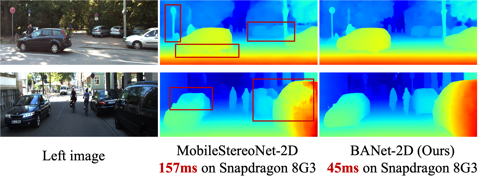
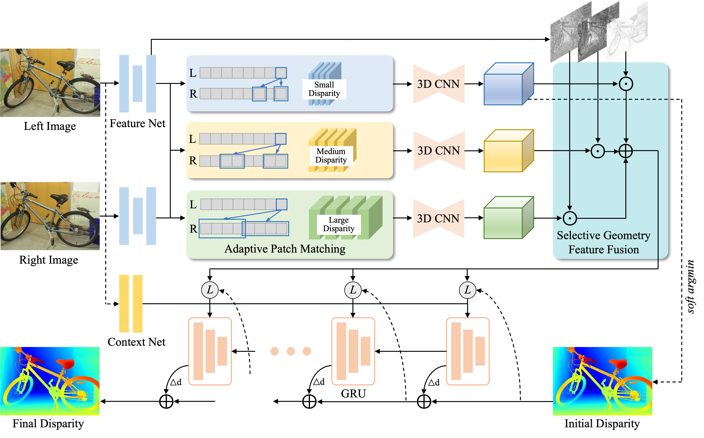
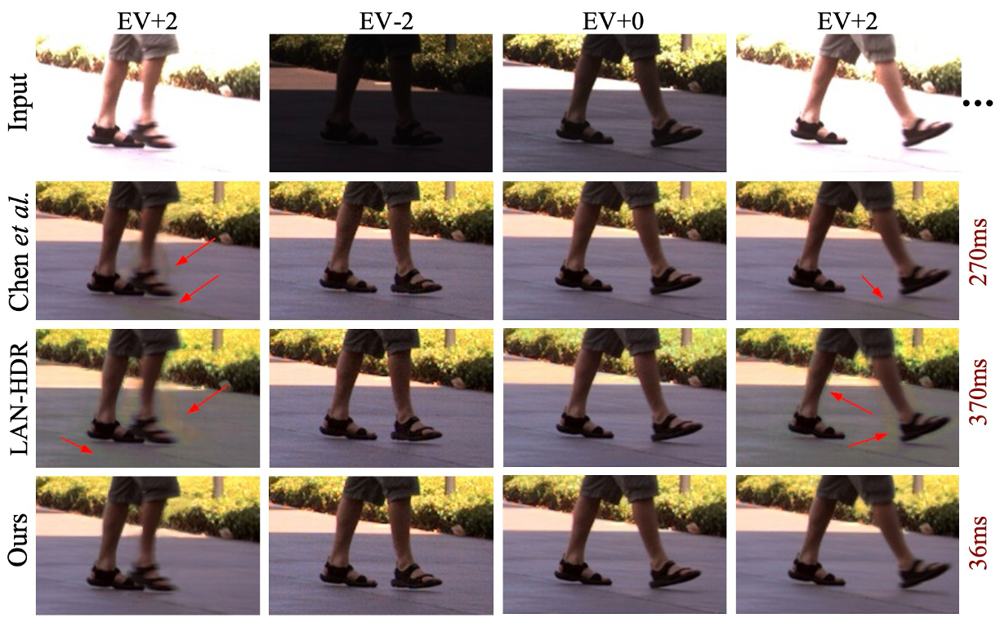
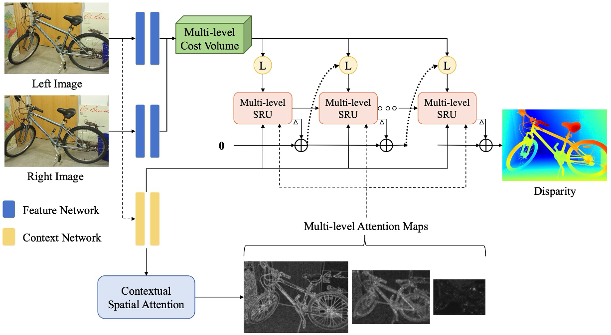
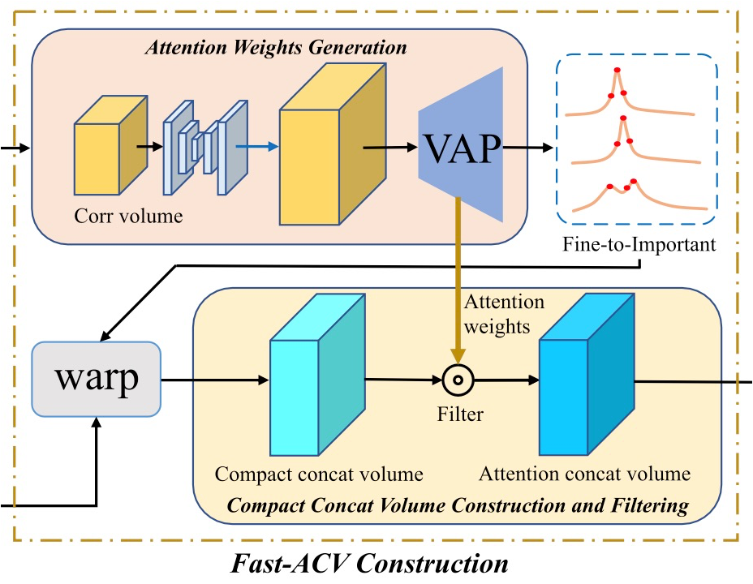
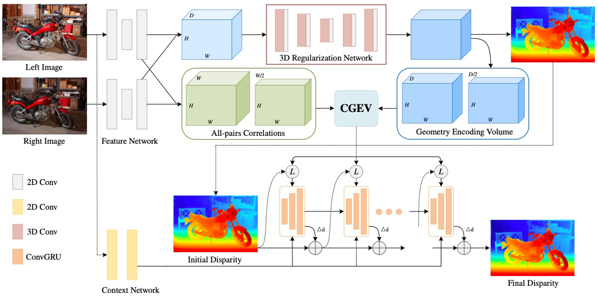
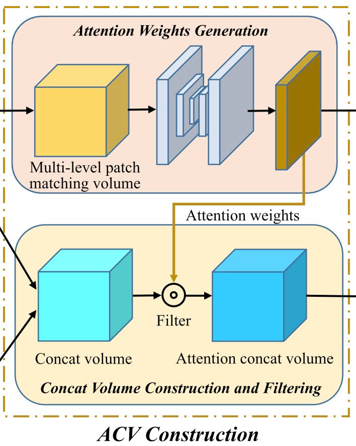

Gangwei Xu | 许刚伟 Ph.D. StudentHuazhong University of Science and Technology (HUST) |
I am a second-year Ph.D. student at Huazhong University of Science and Technology, supervised by Prof. Xin Yang. Prior to that, I earned a dual bachelor's degree in Communication Engineering and Financial Engineering from Huazhong University of Science and Technology. I also spent a wonderful time at Shanghai AI Laboratory as a research intern, mentored by Prof. Tianfan Xue . Currently, I am a research intern at Xiaomi EV, focusing on generative world models.
|

|
BANet: Bilateral Aggregation Network for Mobile Stereo Matching
Gangwei Xu, Jiaxin Liu, Xianqi Wang, Junda Cheng, Yong Deng, Jinliang Zang, Yurui Chen, Xin Yang ICCV 2025 paper / code A novel bilateral aggregation network for mobile stereo matching using only 2d convolutions. |
|

|
IGEV++: Iterative Multi-range Geometry Encoding Volumes for Stereo Matching
Gangwei Xu, Xianqi Wang, Zhaoxing Zhang, Junda Cheng, Chunyuan Liao, Xin Yang TPAMI 2025 paper / code An effective and efficient method for handling large disparities and extensive ill-posed regions. |
|

|
HDRFlow: Real-Time HDR Video Reconstruction with Large Motions
Gangwei Xu, Yujin Wang, Jinwei Gu, Tianfan Xue, Xin Yang CVPR 2024 paper / code A simple method for real-time HDR video reconstruction. |
|

|
Selective-Stereo: Adaptive Frequency Information Selection for Stereo Matching
Xianqi Wang, Gangwei Xu, Hao Jia, Xin Yang CVPR 2024 (Highlight) paper / code A novel iterative update operator (SRU) for stereo matching. |
|

|
Accurate and Efficient Stereo Matching via Attention Concatenation Volume
Gangwei Xu, Yun Wang, Junda Cheng, Jinhui Tang, Xin Yang TPAMI 2024 paper / code A novel cost volume representation (Fast-ACV) for real-time stereo matching. |
|

|
Iterative Geometry Encoding Volume for Stereo Matching
Gangwei Xu, Xianqi Wang, Xiaohuan Ding, Xin Yang CVPR 2023 paper / code A new deep network architecture that combines the complementary advantages of filtering-based and optimization-based methods. |
|

|
Attention Concatenation Volume for Accurate and Efficient Stereo Matching
Gangwei Xu, Junda Cheng, Peng Guo, Xin Yang CVPR 2022 paper / code A novel cost volume representation (Attention Concatenation Volume) for stereo matching. |
HUST Academic Star (华中科技大学“学术新星”), 2024
National Scholarship (国家奖学金), PhD, 2024
National Scholarship (国家奖学金), master, 2023
First Prize, China Graduate AI Competition, 2023
Xiaomi Scholarship, 2022
Conference Reviewer: CVPR 2023, ICCV 2023, SIGGRAPH Asia 2023, CVPR 2024, ECCV 2024, ICRA 2024, ICLR 2025, AAAI 2025, CVPR 2025, ICCV 2025, NeurIPS 2025.
Journal Reviewer: TPAMI, IJCV, TIP, RA-L.